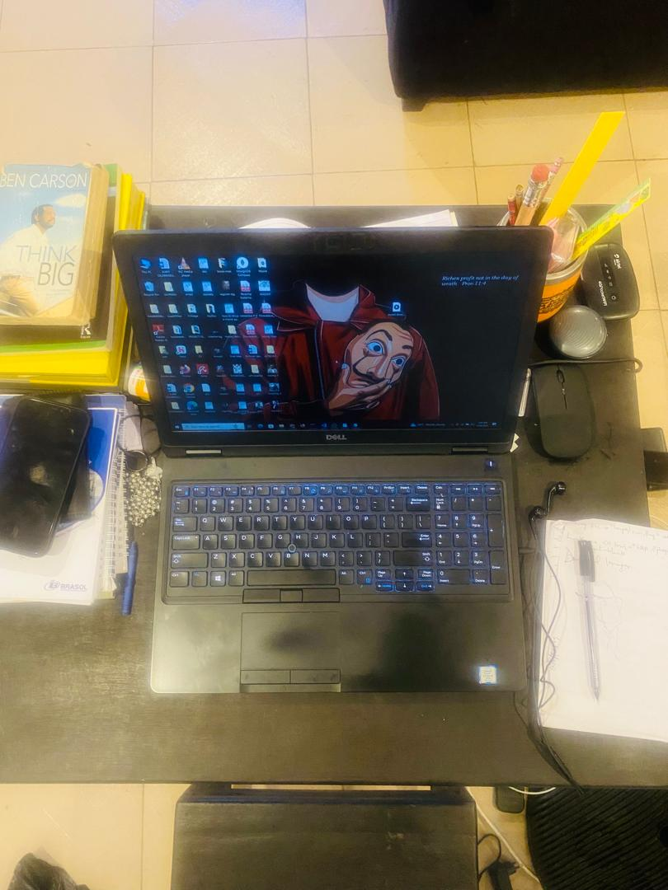

A Powerful Message About My Journey
I am Oluwaseun Olaoluwa Ajayi, an aspiring tech professional at AltSchool Africa’s School of Engineering. My journey is about transforming my career through dedication, learning, and creativity. Below, I showcase my story using various media elements to inspire and connect.
My Profile Picture

This image represents me, adapting to different devices just as I adapt to new challenges in my learning journey.
My Learning Environment
A snapshot of my workspace where I study and code at AltSchool Africa.
My Motivation
This audio clip inspires me to stay focused and motivated while learning at AltSchool.
My Coding Journey
A video showcasing my passion for coding, symbolizing my growth at AltSchool.
My AltSchool Community
An embedded view of the AltSchool Africa website, where my learning journey thrives.